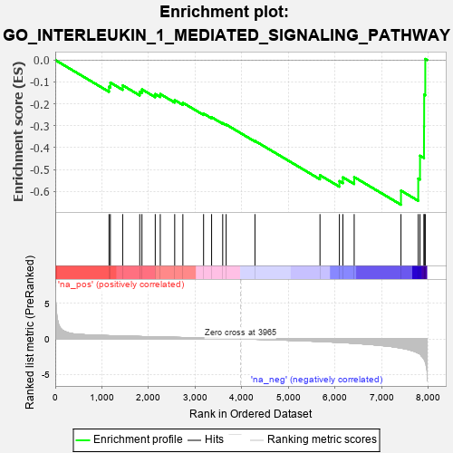
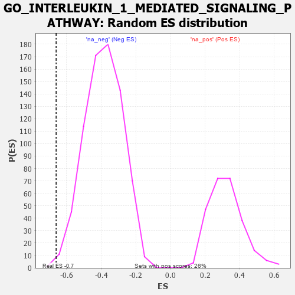

| | | Dataset | 7d |
| Phenotype | NoPhenotypeAvailable |
| Upregulated in class | na_neg |
| GeneSet | GO_INTERLEUKIN_1_MEDIATED_SIGNALING_PATHWAY |
| Enrichment Score (ES) | -0.6603808 |
| Normalized Enrichment Score (NES) | -1.7045593 |
| Nominal p-value | 0.005376344 |
| FDR q-value | 0.03628812 |
| FWER p-Value | 0.926 |
Table: GSEA Results Summary

Fig 1: Enrichment plot: GO_INTERLEUKIN_1_MEDIATED_SIGNALING_PATHWAY
Profile of the Running ES Score & Positions of GeneSet Members on the Rank Ordered List
| PROBE | GENE SYMBOL | GENE_TITLE | RANK IN GENE LIST | RANK METRIC SCORE | RUNNING ES | CORE ENRICHMENT | | 1 | PSMD7 | | | 1152 | 0.454 | -0.1220 | No |
| 2 | PSMD2 | | | 1181 | 0.450 | -0.1028 | No |
| 3 | RBX1 | | | 1445 | 0.401 | -0.1156 | No |
| 4 | PSMD4 | | | 1811 | 0.335 | -0.1446 | No |
| 5 | PSMD6 | | | 1858 | 0.326 | -0.1339 | No |
| 6 | PSME4 | | | 2143 | 0.285 | -0.1552 | No |
| 7 | PSMF1 | | | 2251 | 0.268 | -0.1552 | No |
| 8 | PSMD5 | | | 2560 | 0.218 | -0.1829 | No |
| 9 | CUL1 | | | 2735 | 0.193 | -0.1950 | No |
| 10 | PSMD9 | | | 3179 | 0.125 | -0.2445 | No |
| 11 | TAB1 | | | 3351 | 0.097 | -0.2611 | No |
| 12 | MAPK3 | | | 3589 | 0.062 | -0.2878 | No |
| 13 | SKP1 | | | 3663 | 0.049 | -0.2945 | No |
| 14 | PSME3 | | | 4280 | -0.056 | -0.3692 | No |
| 15 | PSMD1 | | | 5674 | -0.367 | -0.5259 | No |
| 16 | UBB | | | 6090 | -0.503 | -0.5527 | No |
| 17 | EGR1 | | | 6165 | -0.527 | -0.5354 | No |
| 18 | UBE2N | | | 6407 | -0.621 | -0.5343 | No |
| 19 | UBC | | | 7410 | -1.274 | -0.5960 | Yes |
| 20 | ST18 | | | 7780 | -2.007 | -0.5410 | Yes |
| 21 | TRAF6 | | | 7818 | -2.157 | -0.4367 | Yes |
| 22 | PLCB1 | | | 7904 | -2.841 | -0.3038 | Yes |
| 23 | PSMD3 | | | 7907 | -2.887 | -0.1581 | Yes |
| 24 | PSMD8 | | | 7931 | -3.286 | 0.0050 | Yes |
Table: GSEA details [plain text format]

Fig 2: GO_INTERLEUKIN_1_MEDIATED_SIGNALING_PATHWAY: Random ES distribution
Gene set null distribution of ES for GO_INTERLEUKIN_1_MEDIATED_SIGNALING_PATHWAY